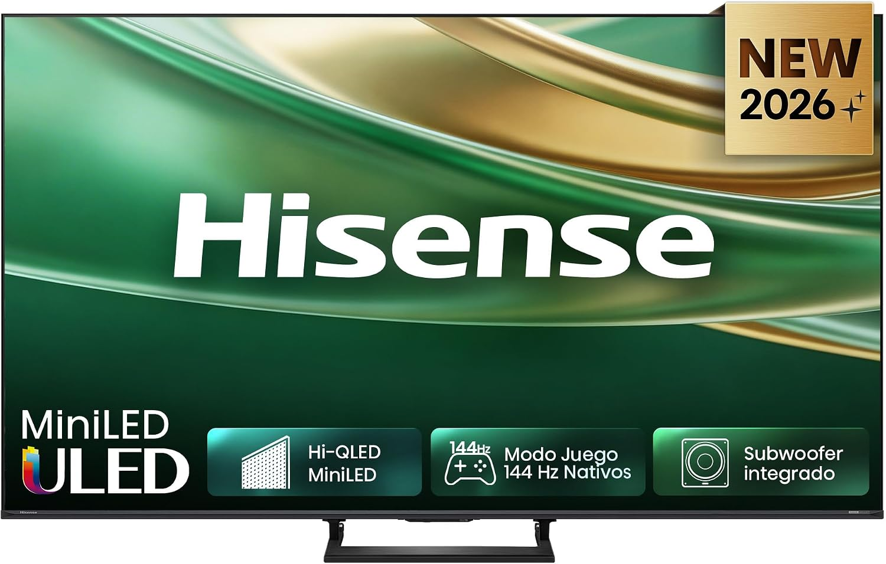
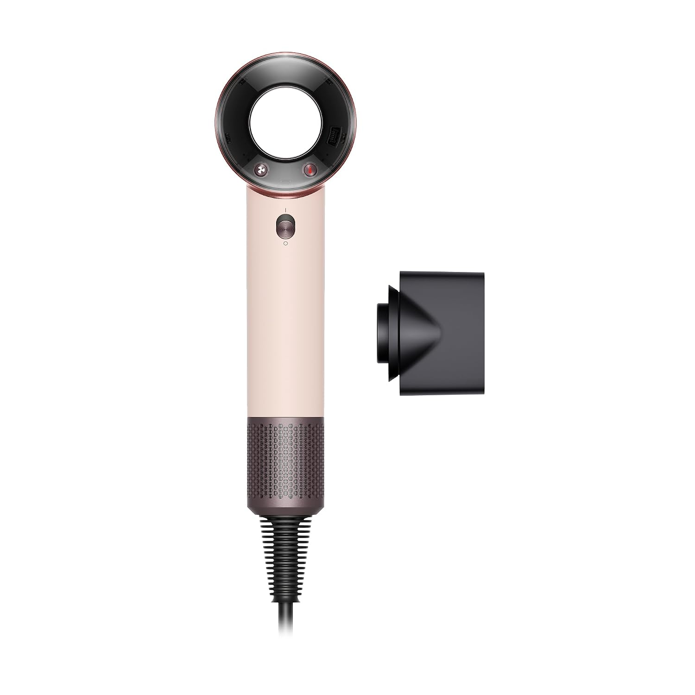
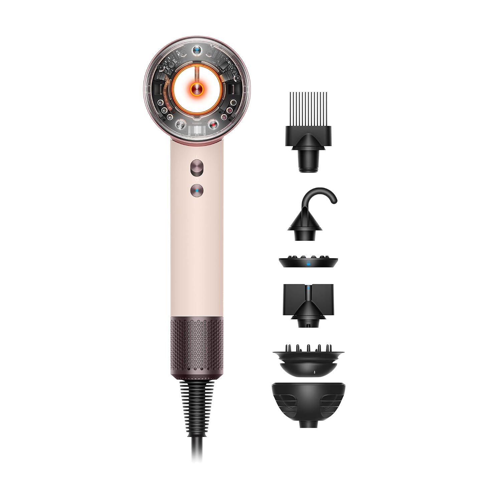

Amazon Kindle de 6", sin publicidad
Lector de 16 GB, grafito, con una autonomía declarada de hasta 6 semanas.
174,99 € Amazon.es · 15 nov 2026, 1:10

Navidad y Reyes 2026 · Por presupuesto
Por el equipo de Casa y Comparativa · Precios y plazos del 15 de noviembre de 2026 (hora de Madrid)
Imagen ilustrativa de ambiente navideño. Foto de Marcelo Verfe / Pexels.
En esta franja hay ideas de estilos distintos: elegante, lectura, tecnología, belleza y hogar. No es una lista solo de gadgets, ni de un único tipo de persona.
Hemos podido verificar tres productos nuevos, de 229,99 € a 399,00 €, y los enlazamos con fichas ya publicadas y con las comparativas de televisores, cafeteras y robots aspiradores. Retiramos el iPad y un set cuya lista de contenido no estaba completa. En portátiles, de momento solo tenemos un MacBook Air verificado, en la guía prémium y en la comparativa de portátiles.
Aviso: En calidad de Afiliado de Amazon, obtenemos ingresos por las compras adscritas que cumplen los requisitos aplicables. Los enlaces a otras tiendas no son de afiliado. Los precios y los plazos de las fichas nuevas son del 15 de noviembre de 2026, hacia la 1:45 (hora de Madrid). Los de las fichas ya publicadas conservan la fecha de aquella consulta. El precio final y la fecha de entrega son los que marque cada tienda al comprar.
Comprueba la fecha de entrega antes de comprar; algunos envíos tardan más en Navidad. En dos televisores no hemos leído una fecha concreta, aunque estaban en stock.
El Kindle de 6 pulgadas, ya publicado, y un Paperwhite de 7 pulgadas, de esta consulta.
Lector de 16 GB, grafito, con una autonomía declarada de hasta 6 semanas.
174,99 € Amazon.es · 15 nov 2026, 1:10

Un lector de 7 pulgadas, 16 GB y sin publicidad, según el título de esta ficha. Amazon indica hasta 12 semanas de uso con una carga, porque la pantalla solo consume energía al pasar la página o al usar la luz frontal, y habla de pantalla de alto contraste, sin reflejos, con luz cálida ajustable. También lo presenta como resistente al agua; no hemos visto en el listado un código IP concreto, así que no lo inventamos. El panel trasero se puede abrir para cambiar la batería, según la ficha. El mando pasapáginas Kindle Click se vende por separado. No repetimos como hecho nuestro que «no fatiga la vista». Lo vende y envía Amazon. Entrega anunciada el jueves 19 de noviembre. Valoraciones: 4,8 sobre 5, a partir de 23 opiniones; el recuento es bajo.
229,99 €Amazon.es · vendido y enviado por Amazon · entrega anunciada el jueves 19 de noviembre · en stock
7", 16 GB, sin publicidad, luz cálida, resistente al agua según la ficha, hasta 12 semanas de autonomía declarada. Kindle Click no incluido. 23 opiniones.
Un Mini LED de 55 pulgadas, con ficha en la comparativa de televisores de todo el año.

El Mini LED de la comparativa de televisores. Tamaño y frecuencia coinciden en la ficha. El sistema operativo no aparece con un nombre claro.
499,00 € Amazon.es · 15 nov 2026, 2:00
Entrega anunciada el jueves 19 de noviembre.
Los televisores 4K de 299,00 € a 499,00 € están comparados, con criterios explícitos, en la página de televisores. No repetimos aquí las fichas. En esta franja encajan, entre otros, el TCL 55V6D (299,00 €, Fire TV), el Philips Ambilight de 43 pulgadas (333,00 €; pocas opiniones y sin fecha de entrega leída), el TCL 55T69C QLED con Google TV (345,00 €), el LG Nano UHD de 55 pulgadas (380,99 €) y el Hisense 55E8S Mini LED (499,00 €).
Dos secadores Dyson: uno de viaje y otro pensado, según la ficha, para cabello rizado o muy rizado.

Un secador de viaje que, según la ficha, es un 32 % más pequeño y un 25 % más ligero que el Supersonic habitual, y compatible con los accesorios del secador Supersonic actual. También declara control inteligente del calor, voltaje que se adapta al destino y que es el único de viaje compatible con esos accesorios. Los porcentajes son del fabricante; no los hemos medido. Lo vende y envía Amazon. Entrega anunciada el jueves 19 de noviembre. Valoraciones: 4,6 sobre 5, a partir de 117 opiniones.
279,00 €Amazon.es · vendido y enviado por Amazon · entrega anunciada el jueves 19 de noviembre · en stock
Secador de viaje, compatible con accesorios Supersonic según la ficha, voltaje adaptable. Los porcentajes de tamaño y peso los declara el fabricante.

Un secador de la línea Nural cuyo título lo sitúa para cabello rizado o muy rizado: no lo presentamos como un modelo universal si la ficha lo acota así. Declara sensores que activan funciones solas, un modo Scalp Protect que ajusta la temperatura del aire hacia 55 °C en el cuero cabelludo, reconocimiento de accesorios, detección de pausas (apaga el calor y reduce el caudal si no hay movimiento) e iluminación que cambia de color según el ajuste de calor. No hemos comprobado esas funciones por nuestra cuenta. Lo vende y envía Amazon. Entrega anunciada el jueves 19 de noviembre. Valoraciones: 4,6 sobre 5, a partir de 76 opiniones.
399,00 €Amazon.es · vendido y enviado por Amazon · entrega anunciada el jueves 19 de noviembre · en stock
Línea Nural, acotado en el título a cabello rizado o muy rizado. Sensores, Scalp Protect a 55 °C y detección de pausas, según la ficha.
Las cafeteras y los robots aspiradores ya tienen comparativa de todo el año. No reescribimos esas páginas ni copiamos sus precios antiguos como si fueran los de hoy.
En cafeteras hay superautomáticas y de cápsulas, con precios consultados el 28 de octubre de 2026. En robots aspiradores, los precios son del 24 de octubre de 2026; algunos de aquella lista entraban en esta franja y otros en la prémium. Conviene mirar el precio actual en la ficha de Amazon al comprar.
Por encima de 500 € están el Kindle Scribe, una KitchenAid y un MacBook Air. Los televisores de esta franja y de la superior están en su comparativa.